Changes in PRIMAP-hist v2.6.1_final compared to v2.6_final for Uzbekistan
2025-03-19
Johannes Gütschow
Change analysis for Uzbekistan for PRIMAP-hist v2.6.1_final compared to v2.6_final
Overview over emissions by sector and gas
The following figures show the aggregate national total emissions excluding LULUCF AR6GWP100 for the country reported priority scenario. The dotted linesshow the v2.6_final data.
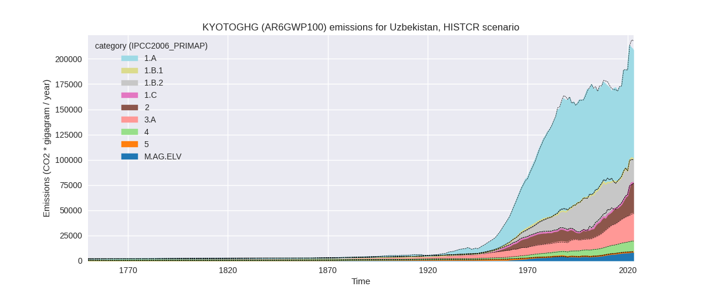
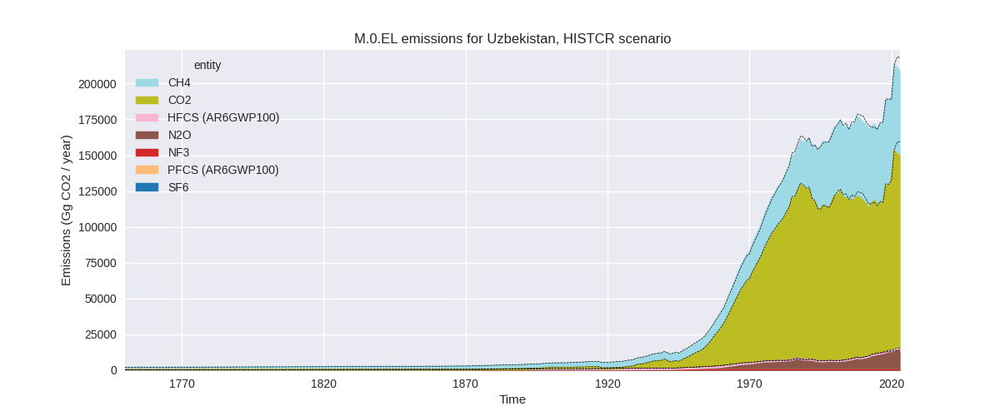
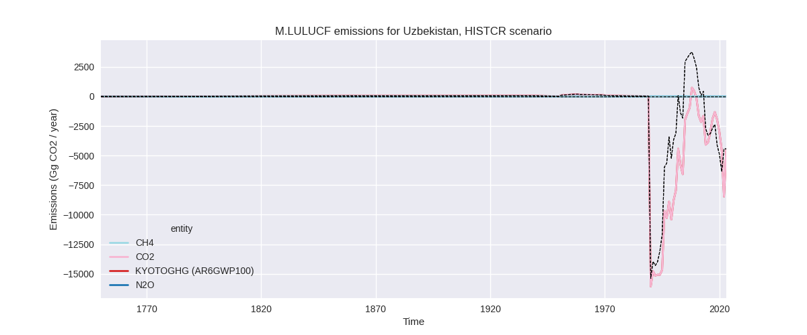
The following figures show the aggregate national total emissions excluding LULUCF AR6GWP100 for the third party priority scenario. The dotted linesshow the v2.6_final data.
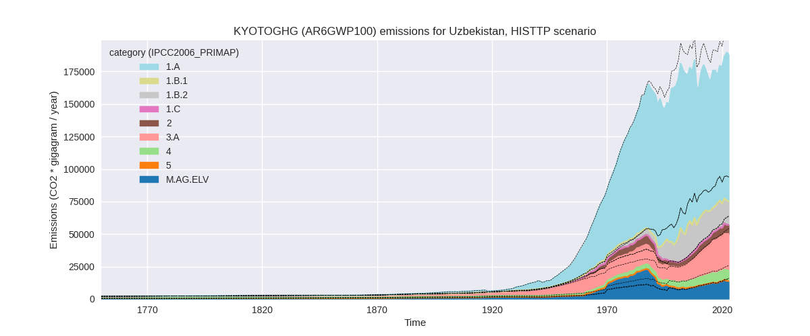
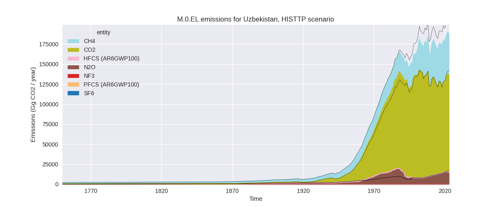
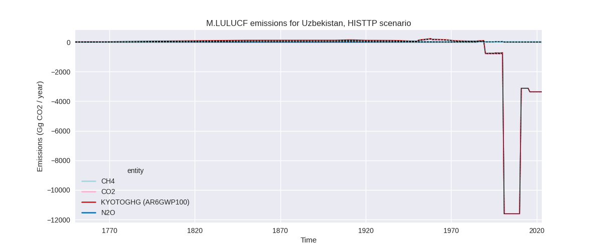
Overview over changes
In the country reported priority scenario we have the following changes for aggregate Kyoto GHG and national total emissions excluding LULUCF (M.0.EL):
- Emissions in 2023 have changed by -4.2%% (-9162.48 Gg CO2 / year)
- Emissions in 1990-2023 have changed by -0.9%% (-1489.82 Gg CO2 / year)
In the third party priority scenario we have the following changes for aggregate Kyoto GHG and national total emissions excluding LULUCF (M.0.EL):
- Emissions in 2023 have changed by -9.2%% (-19137.31 Gg CO2 / year)
- Emissions in 1990-2023 have changed by -8.0%% (-14636.56 Gg CO2 / year)
Most important changes per scenario and time frame
In the country reported priority scenario the following sector-gas combinations have the highest absolute impact on national total KyotoGHG (AR6GWP100) emissions in 2023 (top 5):
- 1: 1.A, CO2 with -9901.37 Gg CO2 / year (-8.5%)
- 2: 2, CO2 with 1404.45 Gg CO2 / year (5.4%)
- 3: M.AG.ELV, N2O with -432.08 Gg CO2 / year (-5.0%)
- 4: 2, N2O with -302.07 Gg CO2 / year (-15.2%)
- 5: 2, HFCS (AR6GWP100) with -177.83 Gg CO2 / year (-11.3%)
In the country reported priority scenario the following sector-gas combinations have the highest absolute impact on national total KyotoGHG (AR6GWP100) emissions in 1990-2023 (top 5):
- 1: 2, CO2 with -1072.78 Gg CO2 / year (-7.9%)
- 2: 1.B.2, CH4 with 622.34 Gg CO2 / year (2.3%)
- 3: 1.A, CO2 with -579.98 Gg CO2 / year (-0.6%)
- 4: M.AG.ELV, N2O with -388.76 Gg CO2 / year (-7.0%)
- 5: 2, N2O with -65.80 Gg CO2 / year (-4.2%)
In the third party priority scenario the following sector-gas combinations have the highest absolute impact on national total KyotoGHG (AR6GWP100) emissions in 2023 (top 5):
- 1: 1.B.2, CH4 with -12313.13 Gg CO2 / year (-42.5%)
- 2: 2, CO2 with -2427.51 Gg CO2 / year (-26.5%)
- 3: M.AG.ELV, N2O with -1950.48 Gg CO2 / year (-14.6%)
- 4: 4, CH4 with -1592.18 Gg CO2 / year (-17.2%)
- 5: 3.A, CH4 with -426.71 Gg CO2 / year (-1.6%)
In the third party priority scenario the following sector-gas combinations have the highest absolute impact on national total KyotoGHG (AR6GWP100) emissions in 1990-2023 (top 5):
- 1: 1.B.2, CH4 with -14088.43 Gg CO2 / year (-47.2%)
- 2: 4, CH4 with -1237.32 Gg CO2 / year (-18.9%)
- 3: M.AG.ELV, N2O with 796.51 Gg CO2 / year (10.4%)
- 4: M.AG.ELV, CO2 with 320.26 Gg CO2 / year (21.1%)
- 5: 2, CO2 with -258.56 Gg CO2 / year (-4.4%)
Notes on data changes
Here we list notes explaining important emissions changes for the country.
- CRT data from BTR1 covering 1990-2022 has been included and replaces
and extends BUR1 data.
- Energy CO2 emissions in 2023 are lower because the CRT data shown an emissions decrease for 2022, while EI data shows increasing emissions.
- Cement CO2 emissions are higher in 2023 because of the new CERT data. For 2000-2013 CRT emissions are lower than BUR1 leading to lower cumulative emissions for the sector.
- Other changes in the CR time-series are also due to the CRT data.
- Changes in the TP time-series come from updated EDGAR and FAO data. FAO has adjusted data for the latest years while EDGAR has updated full time-series with the main change coming from the fugitive CH4
Changes by sector and gas
For each scenario and time frame the changes are displayed for all individual sectors and all individual gases. In the sector plot we use aggregate Kyoto GHGs in AR6GWP100. In the gas plot we usenational total emissions without LULUCF.
country reported scenario
2023
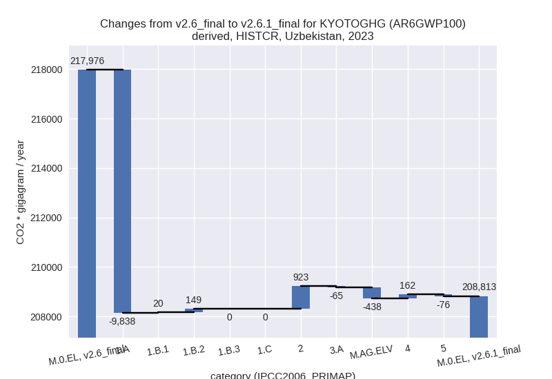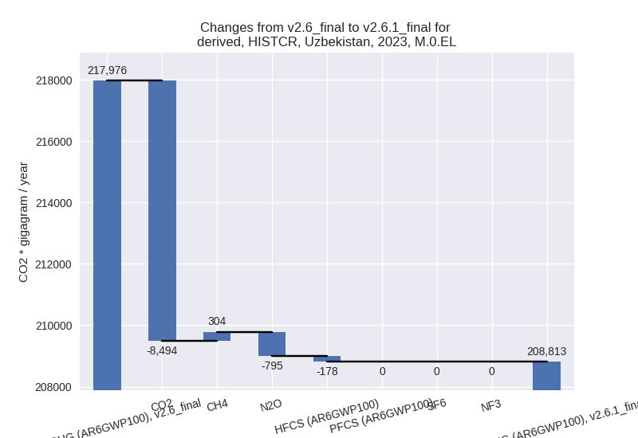
1990-2023
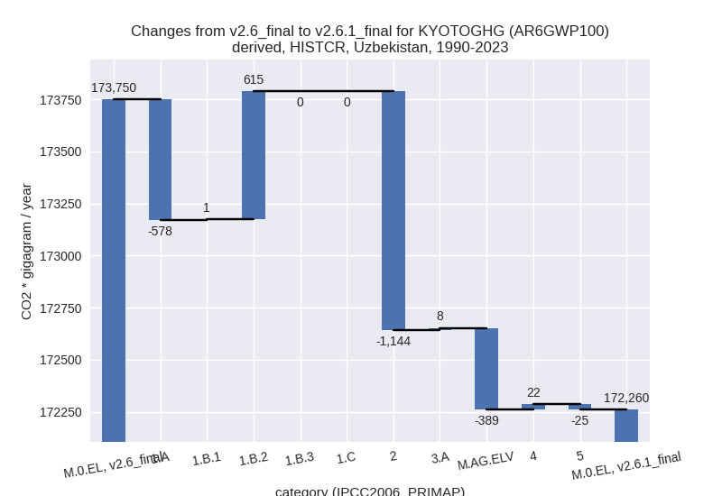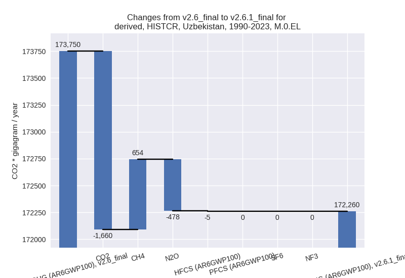
third party scenario
2023
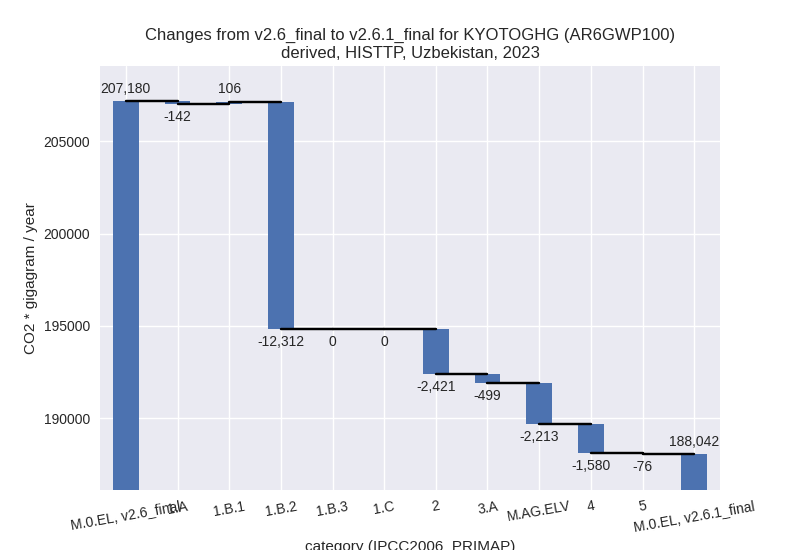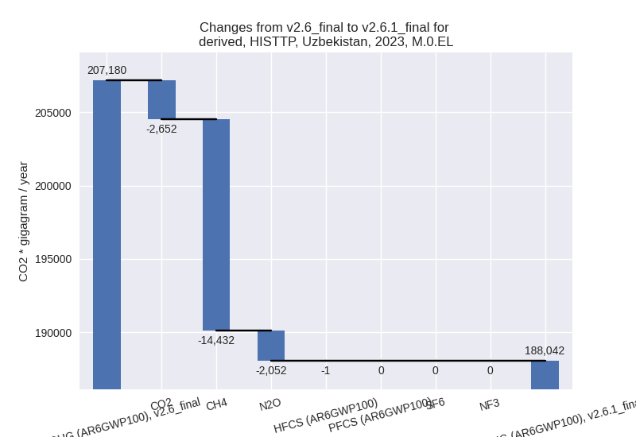
1990-2023
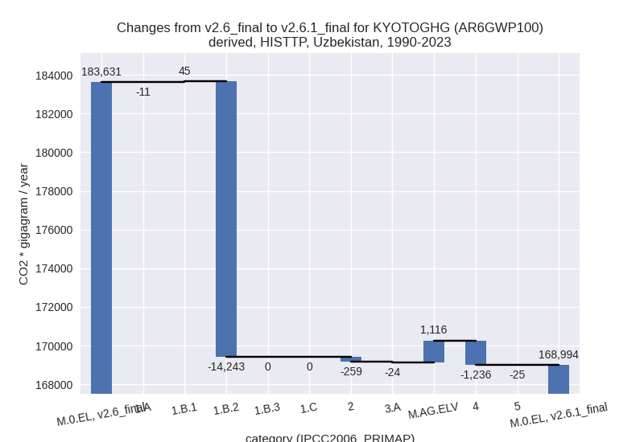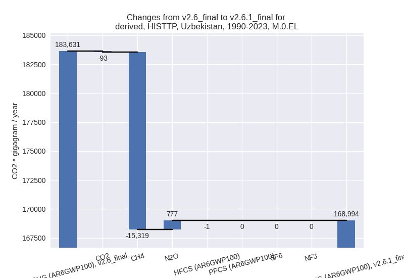
Detailed changes for the scenarios:
country reported scenario (HISTCR):
Most important changes per time frame
For 2023 the following sector-gas combinations have the highest absolute impact on national total KyotoGHG (AR6GWP100) emissions in 2023 (top 5):
- 1: 1.A, CO2 with -9901.37 Gg CO2 / year (-8.5%)
- 2: 2, CO2 with 1404.45 Gg CO2 / year (5.4%)
- 3: M.AG.ELV, N2O with -432.08 Gg CO2 / year (-5.0%)
- 4: 2, N2O with -302.07 Gg CO2 / year (-15.2%)
- 5: 2, HFCS (AR6GWP100) with -177.83 Gg CO2 / year (-11.3%)
For 1990-2023 the following sector-gas combinations have the highest absolute impact on national total KyotoGHG (AR6GWP100) emissions in 1990-2023 (top 5):
- 1: 2, CO2 with -1072.78 Gg CO2 / year (-7.9%)
- 2: 1.B.2, CH4 with 622.34 Gg CO2 / year (2.3%)
- 3: 1.A, CO2 with -579.98 Gg CO2 / year (-0.6%)
- 4: M.AG.ELV, N2O with -388.76 Gg CO2 / year (-7.0%)
- 5: 2, N2O with -65.80 Gg CO2 / year (-4.2%)
Changes in the main sectors for aggregate KyotoGHG (AR6GWP100) are
- 1: Total sectoral emissions in 2022 are 133433.60
Gg CO2 / year which is 63.5% of M.0.EL emissions. 2023 Emissions have
changed by -6.8% (-9669.58 Gg CO2 /
year). 1990-2023 Emissions have changed by 0.0% (38.07 Gg CO2 / year). For 2023 the
changes per gas
are:
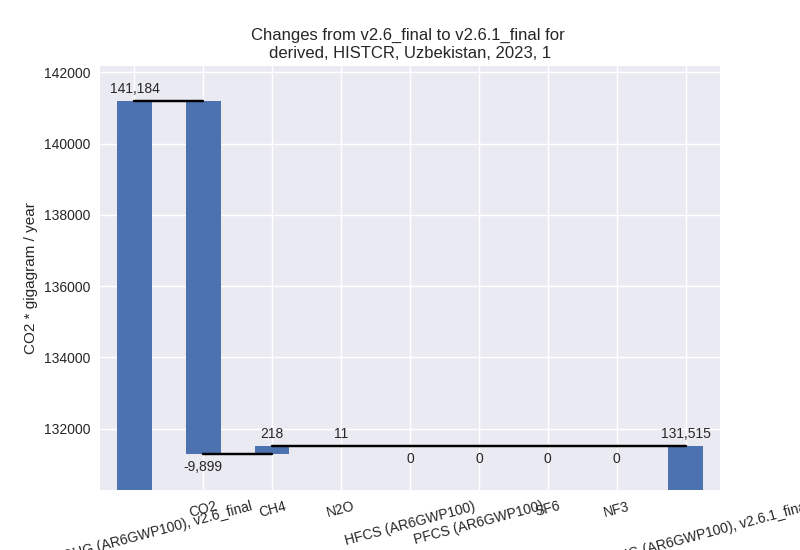
The changes come from the following subsectors:- 1.A: Total sectoral emissions in 2022 are 108389.31
Gg CO2 / year which is 81.2% of category 1 emissions. 2023 Emissions
have changed by -8.4% (-9838.20 Gg
CO2 / year). 1990-2023 Emissions have changed by -0.6% (-577.99 Gg CO2 / year). For 2023
the changes per gas
are:
There is no subsector information available in PRIMAP-hist. - 1.B.1: Total sectoral emissions in 2022 are 231.48
Gg CO2 / year which is 0.2% of category 1 emissions. 2023 Emissions have
changed by 8.2% (19.85 Gg CO2 /
year). 1990-2023 Emissions have changed by 0.4% (0.88 Gg CO2 / year). For 2023 the
changes per gas
are:
There is no subsector information available in PRIMAP-hist. - 1.B.2: Total sectoral emissions in 2022 are
24812.82 Gg CO2 / year which is 18.6% of category 1 emissions. 2023
Emissions have changed by 0.6%
(148.76 Gg CO2 / year). 1990-2023 Emissions have changed by 2.2% (615.18 Gg CO2 / year). For 1990-2023
the changes per gas
are:
There is no subsector information available in PRIMAP-hist.
- 1.A: Total sectoral emissions in 2022 are 108389.31
Gg CO2 / year which is 81.2% of category 1 emissions. 2023 Emissions
have changed by -8.4% (-9838.20 Gg
CO2 / year). 1990-2023 Emissions have changed by -0.6% (-577.99 Gg CO2 / year). For 2023
the changes per gas
are:
- 2: Total sectoral emissions in 2022 are 30508.96 Gg
CO2 / year which is 14.5% of M.0.EL emissions. 2023 Emissions have
changed by 3.1% (923.25 Gg CO2 /
year). 1990-2023 Emissions have changed by -7.5% (-1144.10 Gg CO2 / year). For 2023
the changes per gas
are:
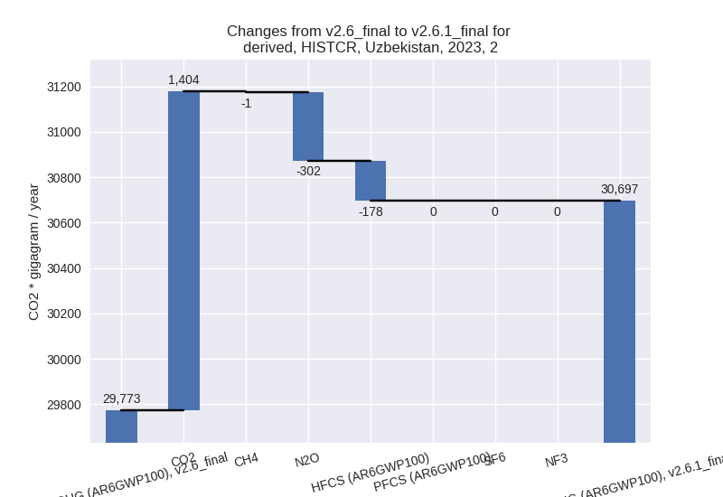
For 1990-2023 the changes per gas are:
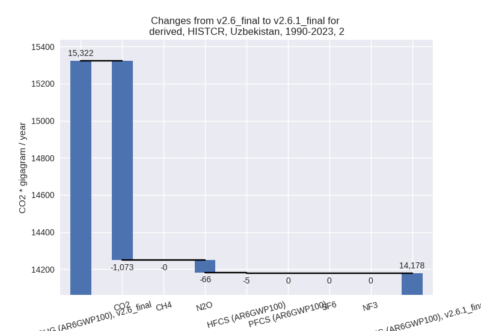 - M.AG: Total sectoral emissions in 2022 are 35560.49 Gg CO2 / year which is 16.9% of M.0.EL emissions. 2023 Emissions have changed by -1.4% (-502.89 Gg CO2 / year). 1990-2023 Emissions have changed by -1.7% (-381.03 Gg CO2 / year).
- 4: Total sectoral emissions in 2022 are 10486.35 Gg CO2 / year which is 5.0% of M.0.EL emissions. 2023 Emissions have changed by 1.5% (162.45 Gg CO2 / year). 1990-2023 Emissions have changed by 0.3% (22.04 Gg CO2 / year).
- 5: Total sectoral emissions in 2022 are 307.32 Gg
CO2 / year which is 0.1% of M.0.EL emissions. 2023 Emissions have
changed by -19.8% (-75.72 Gg CO2 /
year). 1990-2023 Emissions have changed by -8.0% (-24.79 Gg CO2 / year). For 2023 the
changes per gas
are:
For 1990-2023 the changes per gas are:
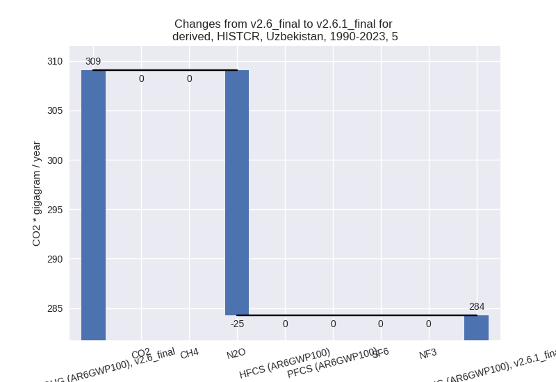
third party scenario (HISTTP):
Most important changes per time frame
For 2023 the following sector-gas combinations have the highest absolute impact on national total KyotoGHG (AR6GWP100) emissions in 2023 (top 5):
- 1: 1.B.2, CH4 with -12313.13 Gg CO2 / year (-42.5%)
- 2: 2, CO2 with -2427.51 Gg CO2 / year (-26.5%)
- 3: M.AG.ELV, N2O with -1950.48 Gg CO2 / year (-14.6%)
- 4: 4, CH4 with -1592.18 Gg CO2 / year (-17.2%)
- 5: 3.A, CH4 with -426.71 Gg CO2 / year (-1.6%)
For 1990-2023 the following sector-gas combinations have the highest absolute impact on national total KyotoGHG (AR6GWP100) emissions in 1990-2023 (top 5):
- 1: 1.B.2, CH4 with -14088.43 Gg CO2 / year (-47.2%)
- 2: 4, CH4 with -1237.32 Gg CO2 / year (-18.9%)
- 3: M.AG.ELV, N2O with 796.51 Gg CO2 / year (10.4%)
- 4: M.AG.ELV, CO2 with 320.26 Gg CO2 / year (21.1%)
- 5: 2, CO2 with -258.56 Gg CO2 / year (-4.4%)
Changes in the main sectors for aggregate KyotoGHG (AR6GWP100) are
- 1: Total sectoral emissions in 2022 are 132496.98
Gg CO2 / year which is 69.9% of M.0.EL emissions. 2023 Emissions have
changed by -8.6% (-12348.29 Gg CO2 /
year). 1990-2023 Emissions have changed by -9.9% (-14208.55 Gg CO2 / year). For 2023
the changes per gas
are:
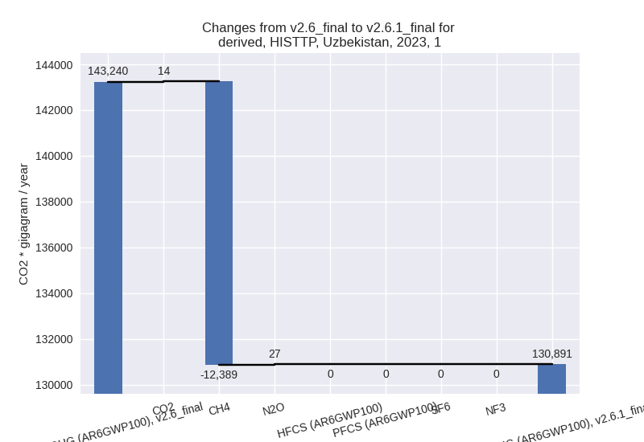
For 1990-2023 the changes per gas are:
The changes come from the following subsectors:- 1.A: Total sectoral emissions in 2022 are 113654.67 Gg CO2 / year which is 85.8% of category 1 emissions. 2023 Emissions have changed by -0.1% (-142.30 Gg CO2 / year). 1990-2023 Emissions have changed by -0.0% (-10.95 Gg CO2 / year).
- 1.B.1: Total sectoral emissions in 2022 are 298.36
Gg CO2 / year which is 0.2% of category 1 emissions. 2023 Emissions have
changed by 47.2% (106.27 Gg CO2 /
year). 1990-2023 Emissions have changed by 25.7% (45.11 Gg CO2 / year). For 2023 the
changes per gas
are:
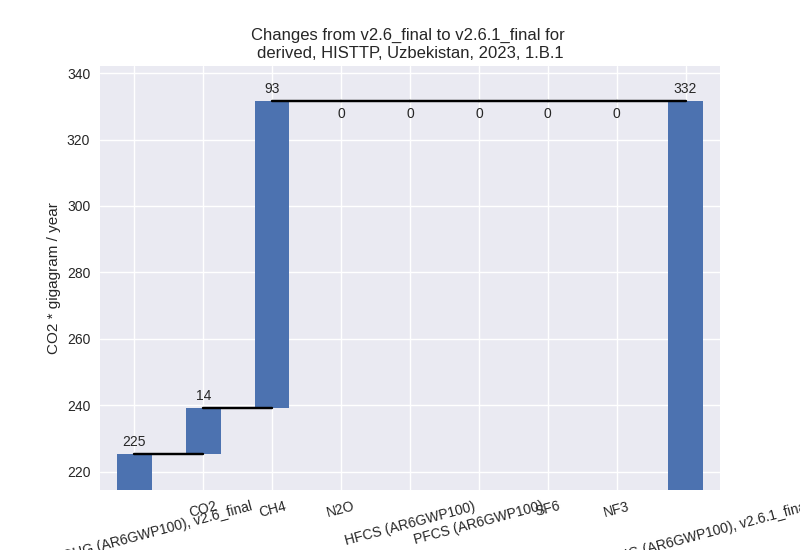
For 1990-2023 the changes per gas are:
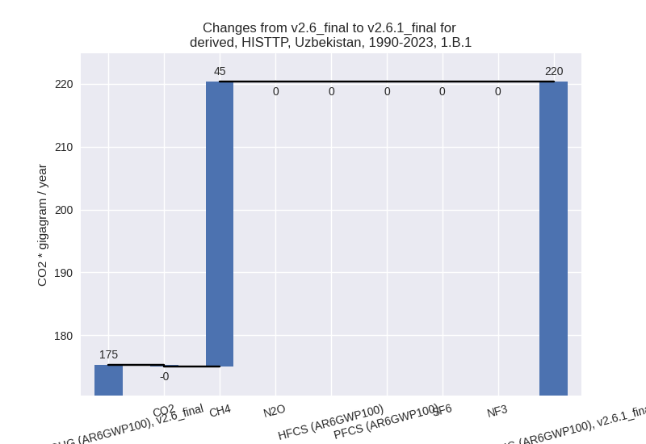
There is no subsector information available in PRIMAP-hist. - 1.B.2: Total sectoral emissions in 2022 are
18543.94 Gg CO2 / year which is 14.0% of category 1 emissions. 2023
Emissions have changed by -41.4%
(-12312.26 Gg CO2 / year). 1990-2023 Emissions have changed by -44.7% (-14242.71 Gg CO2 / year). For 2023
the changes per gas
are:
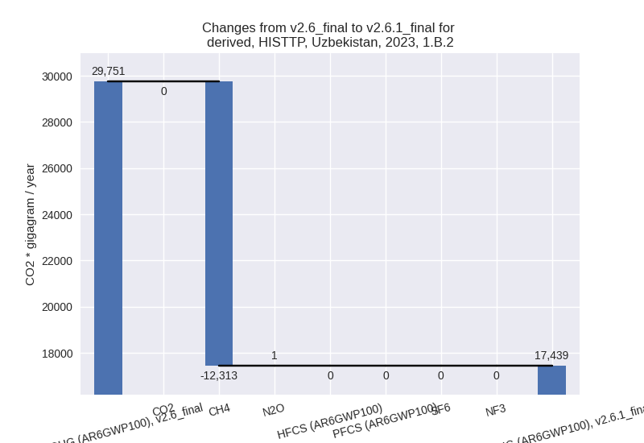
For 1990-2023 the changes per gas are:
There is no subsector information available in PRIMAP-hist.
- 2: Total sectoral emissions in 2022 are 7008.38 Gg
CO2 / year which is 3.7% of M.0.EL emissions. 2023 Emissions have
changed by -25.7% (-2420.54 Gg CO2 /
year). 1990-2023 Emissions have changed by -4.3% (-259.47 Gg CO2 / year). For 2023
the changes per gas
are:
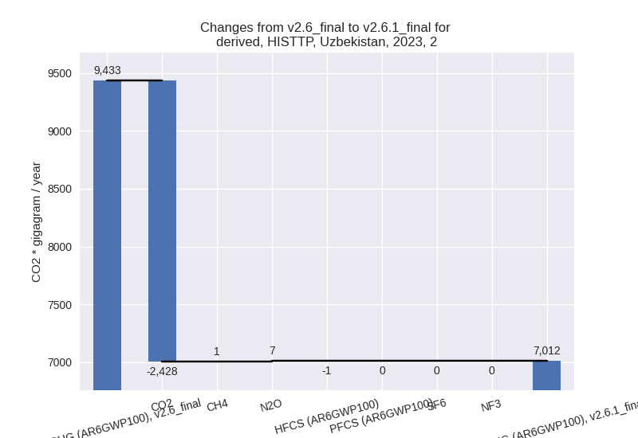
For 1990-2023 the changes per gas are: - M.AG: Total sectoral emissions in 2022 are 41581.03
Gg CO2 / year which is 21.9% of M.0.EL emissions. 2023 Emissions have
changed by -6.1% (-2712.34 Gg CO2 /
year). 1990-2023 Emissions have changed by 4.0% (1091.86 Gg CO2 / year). For 2023 the
changes per gas
are:
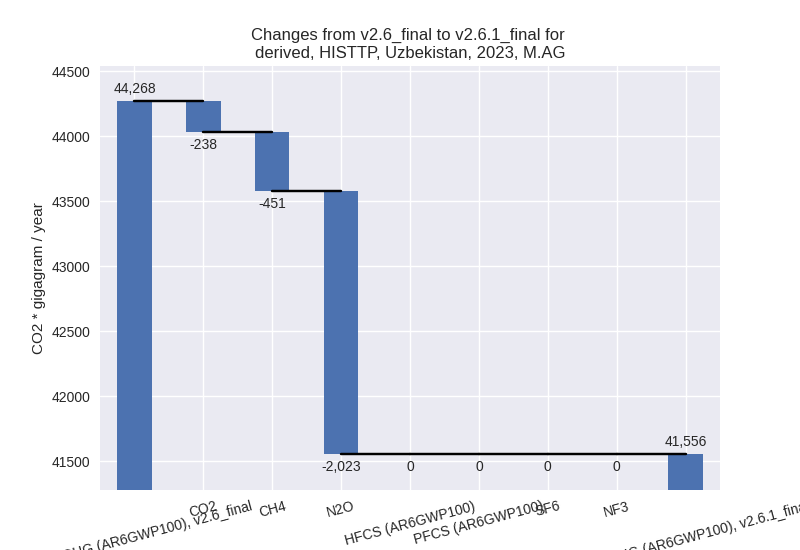
For 1990-2023 the changes per gas are:
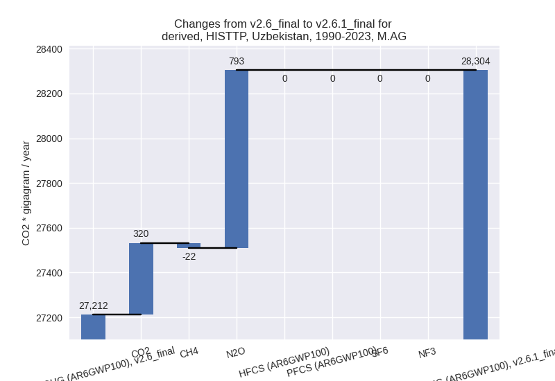
The changes come from the following subsectors:- 3.A: Total sectoral emissions in 2022 are 27898.28 Gg CO2 / year which is 67.1% of category M.AG emissions. 2023 Emissions have changed by -1.7% (-499.10 Gg CO2 / year). 1990-2023 Emissions have changed by -0.1% (-23.78 Gg CO2 / year).
- M.AG.ELV: Total sectoral emissions in 2022 are
13682.75 Gg CO2 / year which is 32.9% of category M.AG emissions. 2023
Emissions have changed by -14.1%
(-2213.24 Gg CO2 / year). 1990-2023 Emissions have changed by 11.3% (1115.64 Gg CO2 / year). For 2023
the changes per gas
are:
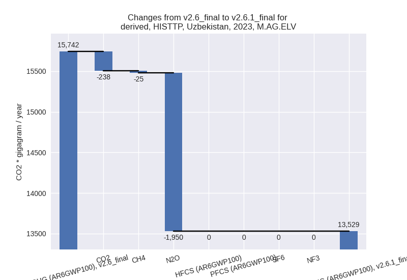
For 1990-2023 the changes per gas are:
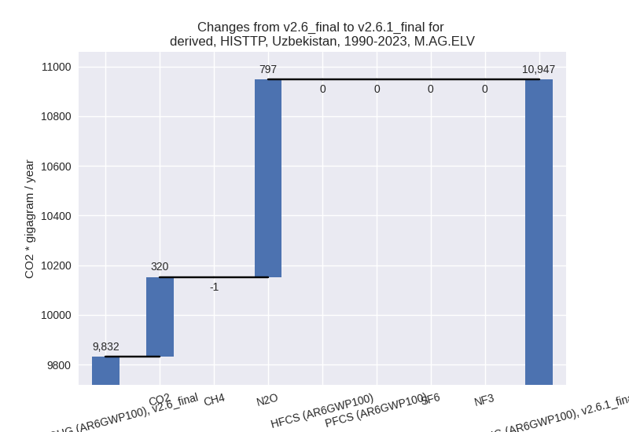
There is no subsector information available in PRIMAP-hist.
- 4: Total sectoral emissions in 2022 are 8132.18 Gg
CO2 / year which is 4.3% of M.0.EL emissions. 2023 Emissions have
changed by -16.0% (-1580.42 Gg CO2 /
year). 1990-2023 Emissions have changed by -17.8% (-1235.61 Gg CO2 / year). For 2023
the changes per gas
are:

For 1990-2023 the changes per gas are: - 5: Total sectoral emissions in 2022 are 307.32 Gg
CO2 / year which is 0.2% of M.0.EL emissions. 2023 Emissions have
changed by -19.8% (-75.72 Gg CO2 /
year). 1990-2023 Emissions have changed by -8.0% (-24.79 Gg CO2 / year). For 2023 the
changes per gas
are:
For 1990-2023 the changes per gas are: